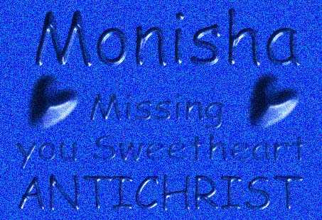

Relax, you've just been erased by the AntiChrist
"Religion
is a superstition that originated in man's mental ability to solve natural phenomena. The
church is an organized institution that has always been a stumbling block to
progress."
[Emma Goldman -"What I Believe"]
Greetings to the following people
Xessor
JeriCho Punkis
Devil-C Pakistan HC
I know that a few of you are going to be pissed off by the following picture but my friend sent it to me and I thought his graphical skills required a little bit of publicity. He did it in Photo Shop 5.0

Copyright(C) The AntiChrist 1999. All rights reserved.